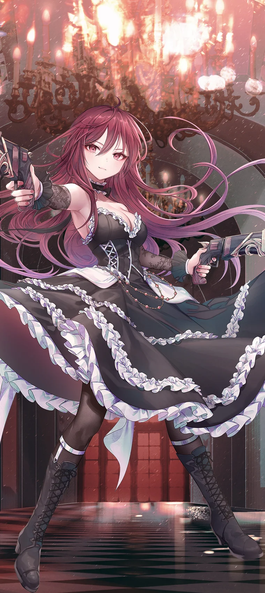
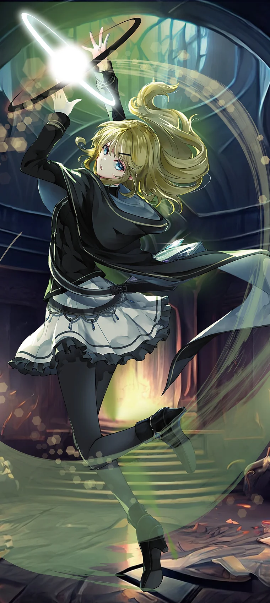

<!DOCTYPE html>
<html lang="ko">

<head>
    <title>CROSSxGEAR 규칙 설명서</title>
    <link rel="stylesheet" href="/assets/css/style.css">
    <script src="/assets/js/lib/highlight.min.js"></script>
    <script src="/assets/js/lib/lenis.min.js"></script>
    <script src="/assets/js/head.js"></script>
</head>

<body id="tt-body-index">
    <div id="z-body">
        <div id="z-header"></div>

        <div id="z-layout">
            <main class="z-main">
                <div class="z-main__area">

                    <div class="z-article__section">

                        <div class="z-article">
                            <!--  -->
                            <h1 class="z-article__title">CROSSxGEAR 규칙 설명서</h1>
                            <div class="z-article__meta">
                                <a href="/category/creation/boardgame" class="z-article__category">
                                    <div class="z-article__category-text">creation/boardgame</div>
                                </a>
                                <div class="z-article__meta-divider"></div>
                                <div class="z-article__date">2025. 6. 21.</div>
                            </div>

                            <!-- article-content -->
                            <div class="z-article__body" id="z-article__body">
                                
                                <!-- contents start -->
                                <p data-ke-size="size16"> </p>
                                <h3 data-ke-size="size23"><span style="color: #000000; text-align: start;">게임의 배경
                                        (시놉시스)</span></h3>
                                <p data-ke-size="size16">
                                    당신은 이 나라의 왕입니다.<br /><br />최근, 다른 국가들 사이에서 연일 발생하는 끊임없는 전투와 좋지 않은 소문들.<br /><br />그러한 것과는 상관없을거라 생각될 정도로 평온한 이 나라도,<br />이제는 언제 전쟁의 소용돌이에 휩쓸려들거나, 다른 국가의 습격을 받을 지도 모르는 상태입니다.<br /><br />그리고 그런 위기적 상황에 당신은, <br />자국을 지키기 위해 나라 곳곳의 숙련자들을 소집하고, <br />그 중에서 선택한 2명과 계약을 체결하게 됩니다.<br /><br />왕의 혈통에 이어진 힘 -GEAR LINK-.<br />계약자에게 가져오는 강력한 능력.<br /><br />양보할 수 없는 전투를 지배하는 것은 자국인가, 다른 국가인가・・・・・・
                                </p>
                                <p data-ke-size="size16"> </p>
                                <p data-ke-size="size16"> </p>
                                <h3 data-ke-size="size23">게임의 목적</h3>
                                <p data-ke-size="size16">
                                    이 게임은,<br />상대를 먼저 전투 불능으로 만든 플레이어가 승리합니다.<br /><br />자, 이제 당신의 전략과 지휘를 최대한 발휘해 주세요.
                                </p>
                                <p data-ke-size="size16"> </p>
                                <p data-ke-size="size16"> </p>
                                <h3 data-ke-size="size23">캐릭터 소개</h3>
                                <table style="border-collapse: collapse; width: 100%;" border="1"
                                    data-ke-align="alignLeft" data-ke-style="style16">
                                    <tbody>
                                        <tr>
                                            <td style="width: 25%;" rowspan="3">
                                                <figure class="imageblock alignCenter">
                                                    <span data-lightbox="lightbox">
                                                        
                                                    </span>
                                                    <figcaption></figcaption>
                                                </figure>
                                            </td>
                                            <td style="width: 75%;"><b>아리아 = 발렌타인<br /><br /></b><span
                                                    style="color: #000000; text-align: start;">신장:
                                                    149cm</span><b><br /></b><span
                                                    style="color: #000000; text-align: start;">체중:
                                                    39kg</span><br /><span
                                                    style="color: #000000; text-align: start;">생일: 2월
                                                    14일</span><br /><span
                                                    style="color: #000000; text-align: start;">혈액형: 불명</span><br /><span
                                                    style="color: #000000; text-align: start;">취미: 독서</span><br /><span
                                                    style="color: #000000; text-align: start;">좋아하는것: 와인</span></td>
                                        </tr>
                                        <tr>
                                            <td style="width: 75%;"><span style="color: #000000; text-align: start;">전용
                                                    아츠 카드(각 5장 ・ 합계 15장)</span><br /><span
                                                    style="color: #000000; text-align: start;">&bull; 戦慄の弾丸 (전율의
                                                    총알)</span><br /><span
                                                    style="color: #000000; text-align: start;">&bull; 壮麗な舞撃 (장려한
                                                    무격)</span><br /><span
                                                    style="color: #000000; text-align: start;">&bull; 悠然とした装填 (유연한
                                                    장전)</span></td>
                                        </tr>
                                        <tr>
                                            <td style="width: 75%;"><span style="color: #000000; text-align: start;">피의
                                                    총알을 쏘는 양손 총잡이(건너).</span><br /><span
                                                    style="color: #000000; text-align: start;">"홍련의 탄환"이라는 별명을 가지고
                                                    있다.</span><br /><span style="color: #000000; text-align: start;">이미
                                                    200살을 넘긴 흡혈귀지만, 사람의 피를 빨아본 적은 없다.</span><br /><span
                                                    style="color: #000000; text-align: start;">흡혈귀족의 우두머리이면서, 일상에 지루함을
                                                    느끼고 있다.</span><br /><span
                                                    style="color: #000000; text-align: start;">누군가에게 우두머리를 맡기고, 자유롭게
                                                    은거하기위해 계획중.</span></td>
                                        </tr>
                                    </tbody>
                                </table>
                                <table
                                    style="font-family: -apple-system, BlinkMacSystemFont, 'Helvetica Neue', 'Apple SD Gothic Neo', Arial, sans-serif; letter-spacing: 0px; border-collapse: collapse; width: 100%; height: 409px;"
                                    border="1" data-ke-style="style16" data-ke-align="alignLeft">
                                    <tbody>
                                        <tr style="height: 200px;">
                                            <td style="width: 25%; height: 409px;" rowspan="3">
                                                <figure class="imageblock alignCenter">
                                                    <span data-lightbox="lightbox">
                                                        
                                                    </span>
                                                    <figcaption></figcaption>
                                                </figure>
                                            </td>
                                            <td style="width: 75%; height: 200px;"><b><b>샬롯 =
                                                        올리비에</b><br /><br /></b>신장: 155cm<br />체중: 45kg<br />생일: 11월 1일<br />혈액형: A형<br />취미: 과자 만들기<br />좋아하는것: 홍차
                                            </td>
                                        </tr>
                                        <tr style="height: 105px;">
                                            <td style="width: 75%; height: 105px;"><span
                                                    style="color: #000000; text-align: start;">전용 아츠 카드(각 5장 ・ 합계
                                                    15장)</span><br /><span
                                                    style="color: #000000; text-align: start;">&bull; 確固たる意志 (확고한
                                                    의지)</span><br /><span
                                                    style="color: #000000; text-align: start;">&bull; 泰然自若の所作 (태연자악의
                                                    소행)</span><br /><span
                                                    style="color: #000000; text-align: start;">&bull; 静音なる瞬間 (조용한
                                                    순간)</span></td>
                                        </tr>
                                        <tr style="height: 104px;">
                                            <td style="width: 75%; height: 104px;"><span
                                                    style="color: #000000; text-align: start;">신성단 소속의 여기사
                                                    (펜서)</span><br /><span style="color: #000000; text-align: start;">명성
                                                    높은 올리비에 가문에서 태어나 자랐으며 어린 시절부터 엄격한 검술을 가르쳐 받았다. <br />한 손으로 대검을 휘둘러도
                                                    충분한 힘을 가졌다. <br />교단의 명령으로 다양한 임무를 수행해 왔지만, 최근에는 교단에 의심을 품기
                                                    시작했다.</span></td>
                                        </tr>
                                    </tbody>
                                </table>
                                <table style="border-collapse: collapse; width: 100%;" border="1"
                                    data-ke-style="style16" data-ke-align="alignLeft">
                                    <tbody>
                                        <tr>
                                            <td style="width: 25%;" rowspan="3">
                                                <figure class="imageblock alignCenter">
                                                    <span data-lightbox="lightbox">
                                                        
                                                    </span>
                                                    <figcaption></figcaption>
                                                </figure>
                                            </td>
                                            <td style="width: 75%;">
                                                <b>릴리아 = 로젠 크로이츠<br /><br /></b>신장: 155cm<br />체중: 48kg<br />생일: 9월 14일<br />혈액형: 불명<br />취미: 초콜릿 맛집 탐방<br />좋아하는것: 커피
                                            </td>
                                        </tr>
                                        <tr>
                                            <td style="width: 75%;"><span style="color: #000000; text-align: start;">전용
                                                    아츠 카드(각 5장 ・ 합계 15장)</span><br /><span
                                                    style="color: #000000; text-align: start;">&bull; 蠱惑の報い (고혹의
                                                    응보)</span><br /><span
                                                    style="color: #000000; text-align: start;">&bull; 終極の代償 (종극의
                                                    대가)</span><br /><span
                                                    style="color: #000000; text-align: start;">&bull; 血気を纏う紅翼 (혈기를 감싸는
                                                    붉은 날개)</span></td>
                                        </tr>
                                        <tr>
                                            <td style="width: 75%;"><span
                                                    style="color: #000000; text-align: start;">평소에는 온화하지만, 필요한 순간에는 매우
                                                    똑똑한 인간과 흡혈귀의 혼혈.</span><br /><span
                                                    style="color: #000000; text-align: start;">마을의 큰 저택의 현주인 소녀의 부모님께는 큰
                                                    은혜가 있어, 부모님께서 돌아가신 현재도 소녀의 곁에서 사용인으로써 마을에 많은 공헌을 하고
                                                    있다. </span><br /><span
                                                    style="color: #000000; text-align: start;">인간의 삶에 녹아들어 있지만, 보름달
                                                    밤에는..</span></td>
                                        </tr>
                                    </tbody>
                                </table>
                                <table style="border-collapse: collapse; width: 100%;" border="1"
                                    data-ke-style="style16" data-ke-align="alignLeft">
                                    <tbody>
                                        <tr>
                                            <td style="width: 25%;" rowspan="3">
                                                <figure class="imageblock alignCenter">
                                                    <span data-lightbox="lightbox">
                                                        
                                                    </span>
                                                    <figcaption></figcaption>
                                                </figure>
                                            </td>
                                            <td style="width: 75%;"><b><b>카논 =
                                                        베넷</b><br /><br /></b>신장: 137cm<br />체중: 34kg<br />생일: 10월 23일<br />혈액형: O형<br />취미: 산보책<br />좋아하는것: 후라이드 포테이토
                                            </td>
                                        </tr>
                                        <tr>
                                            <td style="width: 75%;"><span style="color: #000000; text-align: start;">전용
                                                    아츠 카드(각 5장 ・ 합계 15장)</span><br /><span
                                                    style="color: #000000; text-align: start;">&bull; 白狼奮迅
                                                    (백랑분진)</span><br /><span
                                                    style="color: #000000; text-align: start;">&bull; 才幹の凌駕 (우월한
                                                    재능)</span><br /><span
                                                    style="color: #000000; text-align: start;">&bull; 獣力共化 (수력공화)</span>
                                            </td>
                                        </tr>
                                        <tr>
                                            <td style="width: 75%;"><span style="color: #000000; text-align: start;">숲에
                                                    사는 수족의 소녀. 백랑은 어린 시절부터 함께 보낸 동반자이다.</span><br /><span
                                                    style="color: #000000; text-align: start;">한가한 시간마다 브러싱을 해주며 언제나
                                                    털빠짐에 신경을 쓰고 있다.</span><br /><span
                                                    style="color: #000000; text-align: start;">전투에는 부적합해 보이지만, 작고 기민한
                                                    몸놀림으로 지시를 내리는 것만큼은 매우 적격이다. 그 이외의 것은...</span><br /><span
                                                    style="color: #000000; text-align: start;">동물들과도 대화가 가능하며, 짐승족에게
                                                    사랑받는 캐릭터이다.</span></td>
                                        </tr>
                                    </tbody>
                                </table>
                                <table style="border-collapse: collapse; width: 100%;" border="1"
                                    data-ke-style="style16" data-ke-align="alignLeft">
                                    <tbody>
                                        <tr>
                                            <td style="width: 25%;" rowspan="3">
                                                <figure class="imageblock alignCenter">
                                                    <span data-lightbox="lightbox">
                                                        
                                                    </span>
                                                    <figcaption></figcaption>
                                                </figure>
                                            </td>
                                            <td style="width: 75%;"><b><span
                                                        style="color: #000000; text-align: start;">샤론 =
                                                        크로포드</span><br /><br /></b><span
                                                    style="color: #000000; text-align: start;">신장:
                                                    168cm</span><br /><span
                                                    style="color: #000000; text-align: start;">체중:
                                                    50kg</span><br /><span
                                                    style="color: #000000; text-align: start;">생일: 2월
                                                    8일</span><br /><span style="color: #000000; text-align: start;">혈액형:
                                                    불명</span><br /><span style="color: #000000; text-align: start;">취미:
                                                    고양이와 노는 것</span><br /><span
                                                    style="color: #000000; text-align: start;">좋아하는것: 솔로 캠핑 / 혼자 즐기는
                                                    BBQ</span></td>
                                        </tr>
                                        <tr>
                                            <td style="width: 75%;"><span style="color: #000000; text-align: start;">전용
                                                    아츠 카드(각 5장 ・ 합계 15장)</span><br /><span
                                                    style="color: #000000; text-align: start;">&bull; 紫霧の引導 (자홍의
                                                    인도)</span><br /><span
                                                    style="color: #000000; text-align: start;">&bull; 旺然とした火焔 (왕연한
                                                    화염)</span><br /><span
                                                    style="color: #000000; text-align: start;">&bull; 英明たる豪剣 (영명한
                                                    호검)</span></td>
                                        </tr>
                                        <tr>
                                            <td style="width: 75%;"><span
                                                    style="color: #000000; text-align: start;">『백은의 호검』이라는 별명을 가진 흡혈귀
                                                    검사.</span><br /><span style="color: #000000; text-align: start;">동족인
                                                    아리아에 닮아 독자적인 활동을 선호하며, 신성단으로부터 특례적인 스카우트를 받았지만, 초대를 거절하고 마수 사냥꾼으로
                                                    지내고 있다. </span><br /><span
                                                    style="color: #000000; text-align: start;">앨리스와 자주 나가 고양이와 놀고
                                                    있다.</span><br /><span
                                                    style="color: #000000; text-align: start;">최근에는 숲의 동물들과 대화하고 싶어서 말을
                                                    걸거나 하고 있다.</span></td>
                                        </tr>
                                    </tbody>
                                </table>
                                <table style="border-collapse: collapse; width: 100%;" border="1"
                                    data-ke-style="style16" data-ke-align="alignLeft">
                                    <tbody>
                                        <tr>
                                            <td style="width: 25%;" rowspan="3">
                                                <figure class="imageblock alignCenter">
                                                    <span data-lightbox="lightbox">
                                                        
                                                    </span>
                                                    <figcaption></figcaption>
                                                </figure>
                                            </td>
                                            <td style="width: 75%;"><b><span
                                                        style="color: #000000; text-align: start;">루시아 =
                                                        실베이라</span><br /><br /></b><span
                                                    style="color: #000000; text-align: start;">신장:
                                                    158cm</span><br /><span
                                                    style="color: #000000; text-align: start;">체중:
                                                    42kg</span><br /><span
                                                    style="color: #000000; text-align: start;">생일: 6월
                                                    13일</span><br /><span
                                                    style="color: #000000; text-align: start;">혈액형:
                                                    AB형</span><br /><span style="color: #000000; text-align: start;">취미:
                                                    연구</span><br /><span
                                                    style="color: #000000; text-align: start;">좋아하는것: 떨어지는 류의
                                                    퍼즐게임</span></td>
                                        </tr>
                                        <tr>
                                            <td style="width: 75%;"><span style="color: #000000; text-align: start;">전용
                                                    아츠 카드(각 5장 ・ 합계 15장)</span><br /><span
                                                    style="color: #000000; text-align: start;">&bull; 不実な威光 (부실한
                                                    위광)</span><br /><span
                                                    style="color: #000000; text-align: start;">&bull; 虚無と叡智の結合 (허무와 지혜의
                                                    결합)</span><br /><span
                                                    style="color: #000000; text-align: start;">&bull; 衰退的破壊論 (쇠퇴적
                                                    파괴론)</span></td>
                                        </tr>
                                        <tr>
                                            <td style="width: 75%;"><span
                                                    style="color: #000000; text-align: start;">알리시아와 어깨를 나란히 할 만큼의 아발론
                                                    마술학원의 수재.</span><br /><span
                                                    style="color: #000000; text-align: start;">마술의 심오함에 매료되어 평소에도 연구에
                                                    여념이 없다.</span><br /><span
                                                    style="color: #000000; text-align: start;">몰입하게 되면 주변이 보이지 않게 되는 면이
                                                    있으며, 일을 선악으로 판단하지 않고 자신의 신념을 고수하려다 보니 인간다움이 부족한 언동도...</span></td>
                                        </tr>
                                    </tbody>
                                </table>
                                <p data-ke-size="size16"> </p>
                                <p data-ke-size="size16"> </p>
                                <h3 data-ke-size="size23">게임의 기본</h3>
                                <h4 data-ke-size="size20">필드의 놓는 방법</h4>
                                <p>
                                <figure class="imageblock alignCenter">
                                    <span data-lightbox="lightbox">
                                        
                                    </span>
                                    <figcaption></figcaption>
                                </figure>
                                </p>
                                <p data-ke-size="size16"> </p>
                                <h4 data-ke-size="size20">카드를 보는 방법</h4>
                                <p>
                                <figure class="imageblock alignCenter">
                                    <span data-lightbox="lightbox">
                                        
                                    </span>
                                    <figcaption></figcaption>
                                </figure>
                                </p>
                                <p data-ke-size="size16"> </p>
                                <h4 data-ke-size="size20">상태 설명</h4>
                                <table style="border-collapse: collapse; width: 100%;" border="1"
                                    data-ke-align="alignLeft" data-ke-style="style16">
                                    <tbody>
                                        <tr>
                                            <td style="width: 50%;"><span style="color: #000000; text-align: start;">아츠
                                                    카드 &bull; GEAR 카드의 상태에는,<span> </span></span><br /><span
                                                    style="color: #000000; text-align: start;">업 상태와 다운 상태의 2종류가
                                                    있습니다.</span><br />
                                                <ul style="list-style-type: disc;" data-ke-list-type="disc">
                                                    <li style="color: #000000;">업 상태 (세로 방향)</li>
                                                    <li style="color: #000000;">다운 상태 (가로 방향)</li>
                                                </ul>
                                            </td>
                                            <td style="width: 50%;">
                                                <figure class="imageblock alignCenter">
                                                    <span data-lightbox="lightbox">
                                                        
                                                    </span>
                                                    <figcaption></figcaption>
                                                </figure>
                                            </td>
                                        </tr>
                                    </tbody>
                                </table>
                                <p data-ke-size="size16"> </p>
                                <h4 data-ke-size="size20">행동권의 소비</h4>
                                <p data-ke-size="size16">
                                    업 상태의 GEAR 카드 1장을 다운 상태로 하는 것.<br />행동권의 소비를 하는 GEAR 카드의 앞면 &bull; 뒷면은 상관없다.
                                </p>
                                <p>
                                <figure class="imageblock alignCenter">
                                    <span data-lightbox="lightbox">
                                        
                                    </span>
                                    <figcaption></figcaption>
                                </figure>
                                </p>
                                <p data-ke-size="size16"> </p>
                                <h4 data-ke-size="size20">GEAR LINK에 대하여</h4>
                                <p data-ke-size="size16">
                                    GEARLINK 란, GEARLINK 비용을 지불하는 것으로 효과를 발동합니다.<br />예를 들면, GEARLINK①의 경우, 업상태의 앞면의 GEAR 카드 1장을 다운 상태의 뒷면으로 하는 것으로 발동 할 수 있습니다.
                                </p>
                                <p>
                                <figure class="imageblock alignCenter">
                                    <span data-lightbox="lightbox">
                                        
                                    </span>
                                    <figcaption></figcaption>
                                </figure>
                                </p>
                                <p data-ke-size="size16">
                                    ※ GEARLINK(X): X의 비용은 효과를 발동하는 플레이어가 결정할 수 있으며, 텍스트 내에 X가 쓰여저 있던 경우의 X의 값은 그것과 같다.
                                </p>
                                <p data-ke-size="size16"> </p>
                                <h4 data-ke-size="size20">효과의 타이밍과 발동 순서에 대하여</h4>
                                <p data-ke-size="size16">
                                    아츠의 효과는 그 카드에 쓰여 있는 타이밍에 발동 합니다.<br /><br />효과의 발동이 동시에 일어났을 경우, 어느 순서로 발동시킬지는<br />그 효과를 가지는 카드의 플레이어가 결정합니다.<br /><br />양 플레이어의 아츠의 효과가 동시 타이밍으로 발동한 경우,<br />턴 플레이어로부터 차례로 효과를 해결하고,<br />모두 해결 후에, 상대 플레이어가 차례대로 효과를 해결합니다.
                                </p>
                                <p data-ke-size="size16"> </p>
                                <h4 data-ke-size="size20"><span style="color: #000000; text-align: start;">규칙과 카드 효과의
                                        모순</span></h4>
                                <p data-ke-size="size16"><span
                                        style="color: #000000; text-align: start;">설명서의 내용과 카드 효과 사이에 모순이 발생한 경우,<br />기본적으로 각 카드의 효과를 우선으로 합니다.</span>
                                </p>
                                <p data-ke-size="size16"> </p>
                                <h4 data-ke-size="size20"><span style="color: #000000; text-align: start;">용어집</span>
                                </h4>
                                <p data-ke-size="size16"><b><span
                                            style="color: #ef6f53;">DRIVE</span><span> </span></b><span
                                        style="color: #000000; text-align: start;">∙∙∙ DRIVE했을 때에 아츠에 쓰어져 있는 효과를
                                        발동한다.</span><br /><b><span
                                            style="color: #ef6f53;">ACTIVE</span><span> </span></b><span
                                        style="color: #000000; text-align: start;">∙∙∙ 행동권을 소비하지 않고 공격을 할 수
                                        있다.</span><br /><b><span
                                            style="color: #ef6f53;">DRAIN</span><span> </span></b><span
                                        style="color: #000000; text-align: start;">∙∙∙ 이 아츠가 대미지를 줄 때, 당신은 그 대미지 만큼의
                                        라이프를 회복한다.</span></p>
                                <p data-ke-size="size16"> </p>
                                <p data-ke-size="size16"><b>【登場】 [등장]</b><span> </span>∙∙∙ 이 아츠가 플레이 영역에 나올
                                    때.<br /><b>【退場】 [퇴장]</b><span> </span>∙∙∙ 이 아츠에 파워 이상의 대미지가 축적되었을 때나, 아츠의 효과에
                                    의해, 그 카드가 플레이 영역에서 버린 패로 놓여지는 것.<br /><b>【攻擊時】 [공격시]</b><span> </span>∙∙∙ 이 아츠가
                                    공격할 때.<br /><b>【撤退】 [철수]</b><span> </span>∙∙∙ 이 아츠가 플레이 영역에서 버린 패로 놓여졌을 때.</p>
                                <p data-ke-size="size16"> </p>
                                <p style="color: #000000; text-align: start;" data-ke-size="size16"><b>山札
                                        (덱)</b><span> </span>∙∙∙ 이제부터 카드를 가져올 카드를 두는 장소.<br /><b>捨札 (버린
                                        패)</b><span> </span>∙∙∙ 사용이 끝난 카드 등을 두는 장소.<br /><b>除外 (제거된 패)</b>∙∙∙ 그 게임
                                    중에 제외된 카드를 두는 장소.</p>
                                <p data-ke-size="size16"> </p>
                                <h4 data-ke-size="size20"><span style="color: #000000; text-align: start;">게임의 준비</span>
                                </h4>
                                <p data-ke-size="size16"><b><span
                                            style="color: #000000; text-align: start;">승리조건</span></b></p>
                                <p data-ke-size="size16"> </p>
                                <p data-ke-size="size16">당신은, 다음 조건 중 하나를 충족하면 승리합니다.</p>
                                <ul style="list-style-type: disc; color: #000000; text-align: start;"
                                    data-ke-list-type="disc">
                                    <li>먼저 상대 플레이어의 라이프를 0으로 만든 경우.</li>
                                    <li>상대 플레이어가 카드가 없는 덱에서 카드를 받는 경우가 발생 했을 경우.<br />(그 시점에서 발생하고 있는 효과는 모두 무효가 된다)
                                    </li>
                                </ul>
                                <p data-ke-size="size16"> </p>
                                <p data-ke-size="size16"><b><span
                                            style="color: #000000; text-align: start;">준비</span></b></p>
                                <p data-ke-size="size16"> </p>
                                <p data-ke-size="size16"><span style="color: #000000; text-align: start;">◼︎ 각 플레이어의 초기
                                        라이프는 20으로 하며, 계산기나 메모등으로 관리한다.</span><br /><span
                                        style="color: #000000; text-align: start;">(라이프 상한은 없다. 회복시는 초기 라이프의 20을 넘어
                                        회복한다.)</span><br /><span style="color: #000000; text-align: start;">◼︎ 각자, GEAR
                                        카드 10장을 뒷면으로 GEAR 에리어에 둔다.</span><br /><span style="color: #ee2323;">◼︎ 처음이나 게임에
                                        익숙하지 않은 분은, 테크닉이 필요한 샤론과 루시아는 캐릭터 선택에서 제외하고 플레이 하는것을 추천합니다.</span></p>
                                <p data-ke-size="size16"> </p>
                                <p data-ke-size="size16"> </p>
                                <p data-ke-size="size16"><b><span style="color: #000000; text-align: start;">1상자를 나누어
                                            플레이할 경우</span></b></p>
                                <p data-ke-size="size16"> </p>
                                <p data-ke-size="size16">
                                    ① 가위바위보 등으로 이긴 플레이어가, 「캐릭터 선택」 or 「선공/후공 선택」 을 선택하고, 「캐릭터 선택」후에 「선공/후공 선택」을 실시한다.<br /><br />「캐릭터 선택」의 플레이어<br /><br />당신은 가지고 있는 CROSS GEAR 중에서 캐릭터 카드 1장을 선택하고,<br />캐릭터 카드 에리어에 세트합니다. 그 후, 선택한 캐릭터의<br />아츠카드(각 캐릭터 3종류 x 각 5장의 아츠 카드)/캐릭터 소개참조)를 받는다.<br />당신 &rarr; 상대 플레이어 &rarr; 당신 &rarr; 상대 플레이어의 순으로 캐릭터를 선택한다.<br /><br />「선공/후공 선택」의 플레이어<br /><br />당신은 선공 또는 후공을 선택한다.<br /><br />② 양 플레이어는 선택한 2 캐릭터의 아츠카드(15개 + 15개)를 합하고,<br />1개로 만든 후 섞습니다. 카드 뭉치를 덱으로 세트합니다.<br />③ 초기 손패로, 각 플레이어는 덱에서 4장을 받습니다.
                                </p>
                                <p data-ke-size="size16"> </p>
                                <p data-ke-size="size16"> </p>
                                <p data-ke-size="size16"><b><span style="color: #000000; text-align: start;">각자 준비하여
                                            플레이하는 경우 (2상자)</span></b></p>
                                <p data-ke-size="size16"> </p>
                                <p data-ke-size="size16"><span
                                        style="color: #000000; text-align: start;">① 각 플레이어는 상대방이 모르도록 캐릭터 카드를 고르고, 캐릭터 카드 에리어에 뒷면으로 세트합니다.<br />② 각 플레이어는 선택한 2캐릭터의 아츠 카드(15개 + 15개)를 합하고, 1개로 만든 후 섞습니다. 카드 뭉치를 덱으로 세트합니다.<br />③ 뒷면으로 있는 캐릭ㅌ너 카드를 동시에 오픈합니다.<br />④ 가위바위보 등으로 이긴 플레이어가 선공/ 후공을 선택합니다.<br />⑤ 초기 손패로, 각 플레이어는 덱에서 4장을 받습니다.</span>
                                </p>
                                <p data-ke-size="size16"> </p>
                                <h3 style="color: #000000; text-align: start;" data-ke-size="size23">턴의 흐름</h3>
                                <h4 style="color: #000000; text-align: start;" data-ke-size="size20">준비 &amp; 드로우 페이즈
                                </h4>
                                <p style="color: #000000; text-align: start;" data-ke-size="size16">◼︎ 턴 플레이어는 다음을 순서대로
                                    실행합니다.</p>
                                <p style="color: #000000; text-align: start;" data-ke-size="size16">① 당신의 모든 아츠 &bull;
                                    GEAR카드를 업 상태로 한다.<br />② 당신은 GEAR 카드 2장을 받는다. (1장 밖에 없는 경우에는 1장을 받는다.)<br />※
                                    GEAR카드를 받는다 = GEAR카드 에리어로부터 업 상태인 GEAR 카드를 GEAR게이지에 두는 것<br /><span
                                        style="color: #ee2323;">※ 선공 플레이어는 1턴째만 2장이 아니라, 1장을 받는다.</span><br />③ 당신은 카드
                                    1장을 받는다.<br /><span style="color: #ee2323;">※ 선공 플레이어의 1턴째만 카드를 받지 않는다.</span></p>
                                <h4 style="color: #000000; text-align: start;" data-ke-size="size20">메인 페이즈</h4>
                                <p style="color: #000000; text-align: start;" data-ke-size="size16">◼︎ 턴인 플레이어는, 행동권을 1개
                                    소비하는
                                    것으로<span> </span><b>?</b><span> </span>~<span> </span><b>?</b><span> </span>의
                                    행동 중 1가지를 할 수 있다.<span> </span><br />행동은 좋아하는 순서대로 원하는 만큼 할 수 있다.</p>
                                <p style="color: #000000; text-align: start;" data-ke-size="size16"> </p>
                                <p style="color: #000000; text-align: start;" data-ke-size="size16"><b>❮ ? ❯ 아츠 카드의
                                        등장</b><br />당신의 손패에서 아츠 카드 1장을 업 상태로 플레이 영역에 낸다.<br />※ (플레이 영역은 아츠 카드를 최대 3장까지
                                    둘 수 있다.)<br />※ (아크의 효과 등으로 인하여 플레이 영역에 나올 때도 업 상태로 나온다)</p>
                                <p style="color: #000000; text-align: start;" data-ke-size="size16"> </p>
                                <p style="color: #000000; text-align: start;" data-ke-size="size16"><b>❮ ?? ❯
                                        철수</b><br />당신은 플레이 영역의 아크 1개를 버린 패에 둔다.<br />※ 철수하는 아츠의 DRIVE카드도 함께 버린 패에
                                    둔다.<br />※ [퇴장]의 효과는 발동하지 않는다.</p>
                                <p style="color: #000000; text-align: start;" data-ke-size="size16"> </p>
                                <p style="color: #000000; text-align: start;" data-ke-size="size16"><b>❮ ??? ❯ 엑셀레이션
                                        (가속)</b><br />당신은 카드를 1장 받는다.</p>
                                <p style="color: #000000; text-align: start;" data-ke-size="size16"> </p>
                                <p style="color: #000000; text-align: start;" data-ke-size="size16"><b>❮ ?? ❯
                                        DRIVE</b><br />당신의 플레이 영역의 아츠와 동일한 아츠 카드가 손패에 있을 경우, 그것을 손패에서 플레이 영역의 아츠에 겹쳐놓을 수
                                    있다. 이것을 DRIVE라고 부른다.<br />여기에는, 효과에 따라 버린 폐 등에서 DRIVE한 경우도 포함된다.<br />또한, DRIVE한 카드를
                                    DRIVE카드라 부른다.</p>
                                <p style="color: #000000; text-align: start;" data-ke-size="size16"> </p>
                                <p style="color: #000000; text-align: start;" data-ke-size="size16">그런 다음, 다음 순서로 처리합니다.
                                </p>
                                <p style="color: #000000; text-align: start;" data-ke-size="size16"> </p>
                                <p style="color: #000000; text-align: start;" data-ke-size="size16">① 그 아츠의 파워를 +1
                                    한다.<br />※ (DRIVE카드가 제외된 경우, 파워는 내려갑니다)<br />②
                                    아츠에<span> </span><b>DRIVE</b><span> </span>가 쓰여져 있다면, 쓰여진 효과를
                                    발동합니다.<br />③ 당신은 카드 1장을 받습니다.</p>
                                <blockquote style="color: #000000; text-align: start;" data-ke-style="style1">
                                    <p data-ke-size="size16"><b>[OVER DRIVE]에 관하여</b></p>
                                    <b>발동조건</b><br />이 아츠에 <b><span style="color: #ef6f53;">DRIVE</span></b> 카드 4번째가 붙었을
                                    때, [OVER DRIVE]가 발동합니다.
                                </blockquote>
                                <p style="color: #000000; text-align: start;" data-ke-size="size16"> </p>
                                <p style="color: #000000; text-align: start;" data-ke-size="size16">④ [OVER DRIVE]한 아츠는,
                                    아래의 효과를 얻습니다.</p>
                                <ul style="list-style-type: disc; color: #000000; text-align: start;"
                                    data-ke-list-type="disc">
                                    <li>이번 턴,<span> </span><span
                                            style="color: #ef6f53;"><b>ACTIVE</b></span><span> </span>를 얻는다.</li>
                                    <li>업 상태로 한다.</li>
                                </ul>
                                <p style="color: #000000; text-align: start;" data-ke-size="size16">※ (①~④의 일렬의 흐름의 처리중에
                                    다른 효과 등의 처리는 할 수 없습니다)<br />※ (아츠 카드가 플레이 영역에서 벗어났을 경우, 그 아츠카드에 붙어 있는 DRIVE 카드는 모두
                                    버린 패가 됩니다.<br />※ (DRIVE 카드는 DRIVE 영역에 놓이기 때문에, [등장] 효과나 [퇴장] 효과 등은 발동하지 않습니다)</p>
                                <p style="color: #000000; text-align: start;" data-ke-size="size16"> </p>
                                <p style="color: #000000; text-align: start;" data-ke-size="size16"><b>❮ ? ❯
                                        공격</b><br />[전투의 순서에 대하여]</p>
                                <p style="color: #000000; text-align: start;" data-ke-size="size16">① 공격 지정 단계<br />당신의
                                    플레이 영역의 업 상태의 아츠 1개를 다운 상태로 하고, 상대 플레이어를 공격 대상으로 지정한다.<br />그 때 [공격시]의 효과 등이 있으면 대상을
                                    지정한 후에 해결한다.</p>
                                <p style="color: #000000; text-align: start;" data-ke-size="size16">② 블록 지정 단계<br />공격을
                                    받고 있는 플레이어는 당신의 업 상태의 아츠 1개를 지정하고, 공격처를 플레이어로부터 이 아츠로 변경할 수 있다.<br />이것을 블록이라 한다.
                                </p>
                                <p style="color: #000000; text-align: start;" data-ke-size="size16">③ 대미지 처리
                                    단계<br />&bull; 블록된 경우<br />서로의 아츠는 파워 만큼의 대미지를 서로 준다.<br />파워 이상의 대미지를 받은 아츠는
                                    퇴장한다.<br />※ (받은 대미지는 이 턴 중에는 축적되지만, 이것에 의해 파워가 떨어지는 일은 없다)</p>
                                <p style="color: #000000; text-align: start;" data-ke-size="size16">&bull; 블록되지 않은
                                    경우<br />상대 플레이어의 라이프에 공격한 아츠의 파워 만큼의 대미지를 준다.</p>
                                <h4 style="color: #000000; text-align: start;" data-ke-size="size20">엔드 페이즈</h4>
                                <p style="color: #000000; text-align: start;" data-ke-size="size16">◼︎ 아래의 처리를 순서대로
                                    해결하고, 상대의 턴으로 이동합니다.</p>
                                <p style="color: #000000; text-align: start;" data-ke-size="size16">① 엔드 페이즈의 효과가 있으면,
                                    처리한다.<br />② 모든 아츠의 대미지를 복구(회복)한다.<br />③ 턴 플레이어는 손패가 6장 이상 있는 경우, 5장이 되도록 버린 패로
                                    버립니다.</p>
                                <p style="color: #000000; text-align: start;" data-ke-size="size16"> </p>
                                <h3 style="color: #000000; text-align: start;" data-ke-size="size23">솔로 플레이 모드 - 아리아의
                                    수련장 -<span> </span></h3>
                                <p style="color: #000000; text-align: start;" data-ke-size="size16">이번에 소개된 인물 가운데에는
                                    "홍염의 탄환"의 별명을 알려진 아리아=발렌타인도 있었다.<span> </span><br />그 명칭은 왕의 귀에도 들렸고, 왕은 그
                                    아리아에게 모든 사람의 역량과 도량을 판단하게 했다.</p>
                                <p style="color: #000000; text-align: start;" data-ke-size="size16">이 모드는 국가간의 전투를 대비하여
                                    아리아가 상대가 되어 캐릭터들을 훈련시켜주는 모드입니다.</p>
                                <h4 style="color: #000000; text-align: start;" data-ke-size="size20">승리조건</h4>
                                <p style="color: #000000; text-align: start;" data-ke-size="size16">먼저 상대의 라이프를 0으로 만든
                                    플레이어가 게임에서 승리합니다.</p>
                                <h4 style="color: #000000; text-align: start;" data-ke-size="size20">게임의 준비</h4>
                                <ul style="list-style-type: disc; color: #000000; text-align: start;"
                                    data-ke-list-type="disc">
                                    <li>플레이어는 좋아하는 캐릭터 카드 2장을 선택하여 덱을 만듭니다.</li>
                                    <li>초기 패로서, 덱에서 4장을 뽑습니다.</li>
                                    <li>당신의 라이프는 20이며, 아리아(솔로)는 레벨에 따릅니다.</li>
                                    <li>솔로 아츠 카드 9장(각각 3종류 &times; 3장)를 뒷면으로 섞어서 덱(솔로 덱)에 놓습니다.</li>
                                </ul>
                                <h4 style="color: #000000; text-align: start;" data-ke-size="size20">규칙</h4>
                                <ul style="list-style-type: disc; color: #000000; text-align: start;"
                                    data-ke-list-type="disc">
                                    <li>기본 규칙은 2인 플레이를 참조합니다.</li>
                                    <li>플레이어가 선공입니다.</li>
                                    <li>아리아(솔로)는 코스트의 개념이 없으며, GEAR 카드로 넘기는 장수를 관리합니다.</li>
                                    <li>아리아(솔로)의 필드에 공백이 발생하면,<span> </span><span style="color: #ef6f53;"><b>그 때마다
                                                왼쪽으로 이동</b></span>합니다.</li>
                                    <li>솔로 아츠 카드 = 아츠 카드로 취급합니다.</li>
                                </ul>
                                <h4 style="color: #000000; text-align: start;" data-ke-size="size20">레벨 설정안내 ❮❮ 아리아 (솔로)
                                    ❯❯</h4>
                                <p style="color: #000000; text-align: start;" data-ke-size="size16">아리아(솔로)에는 LEVEL1 ~
                                    5까지 레벨이 있으며, 초기 GEAR 카드의 매수와 라이프의 조합으로 LEVEL 이 정해집니다.</p>
                                <p style="color: #000000; text-align: start;" data-ke-size="size16">◼︎ LEVEL 1 (라이프 20 /
                                    초기 GEAR 0장)이 표준 설정입니다.</p>
                                <ul style="list-style-type: disc; color: #000000; text-align: start;"
                                    data-ke-list-type="disc">
                                    <li>초기 GEAR 카드를 0장 &rarr; 1장 &rarr; 2장으로 설정할 수 있습니다.</li>
                                    <li>라이프를 20 &rarr; 30 &rarr; 50으로 설정할 수 있습니다.</li>
                                </ul>
                                <h4 style="color: #000000; text-align: start;" data-ke-size="size20">레벨을 올리는 방법 ❮❮ 아리아
                                    (솔로) ❯❯</h4>
                                <p style="color: #000000; text-align: start;" data-ke-size="size16">초기 GEAR 카드 (또는) 초기
                                    라이프 어느 쪽이나 1단계를 상승시키면 LEVEL이 1 오릅니다.<br />양쪽 모두 2단계씩 상승시켜 모든 단계를 올리면 LEVEL 5!</p>
                                <p style="color: #000000; text-align: start;" data-ke-size="size16">어느 설정이던지, 단계가 올라가면
                                    레벨이 올라가고 단계가 내려가면 레벨은 내려갑니다.<span> </span><br />같은 레벨에서도 다른 설정 내용으로 플레이 할 수
                                    있으므로 다양한 조정으로 단련해 주십시오.<span> </span></p>
                                <p style="color: #000000; text-align: start;" data-ke-size="size16">ex)<br />LEVEL1 =
                                    GEAR 0장 / 라이프 20<br />LEVEL2 = GEAR 1장 / 라이프 20 또는 GEAR 0장 / 라이프 30<br />LEVEL3 =
                                    GEAR 2장 / 라이프 20 또는 GEAR 1장 / 라이프 30 또는 GEAR 0장 / 라이프 20 ...</p>
                                <h4 style="color: #000000; text-align: start;" data-ke-size="size20">아리아의 움직임</h4>
                                <ul style="list-style-type: disc; color: #000000; text-align: start;"
                                    data-ke-list-type="disc">
                                    <li>GEAR 카드를 1장 얻는다.</li>
                                    <li>GEAR 카드를 1장 소비하여, 솔로 덱을 1장 넘긴다.<br />플레이 영역에 없는 솔로 아츠의 경우 &rarr; 비어있는 플레이 영역의
                                        왼쪽부터 놓는다.<br />플레이 영역에 강튼 솔로 아츠가 있는 경우 &rarr; 강제 DRIVE 한다.<br />효과도 적혀있는 타이밍에
                                        강제발동한다.</li>
                                    <li>모든 GEAR 카드를 사용하면, 아리아(솔로)는 왼쪽에 놓여져 있는 솔로 아츠부터 발동한다.<br />(놓여진 솔로 아츠는 모두 공격한다. 엔드
                                        페이즈시에는 모든 솔로 아츠가 다운 상태로 턴을 종료한다)</li>
                                    <li>솔로 덱이 없어진 경우, 버린 패의 아츠를 셔플하여, 솔로 덱으로 한다.<br />(솔로 덱도 솔로 버린 패도 카드가 없어져, 카드를 가져올 수
                                        없는 경우에는 드로우는 하지 않고 공격으로 이동한다)</li>
                                </ul>
                                <!-- contents end -->
                            </div>
                        </div>
                        <!-- // article-content -->

                        <!-- article-footer -->
                        <div class="z-article__footer">
                            <div class="z-article__prenext-divider"></div>
                            <div class="article-page">
                                <div class="z-article__prenext-list">
                                    <!-- article-nav -->
                                </div>
                            </div>
                        </div>
                        <!-- // article-footer -->
                        <!-- comments -->
                        <div id="disqus_thread"></div>
                        <script>(function () { var d = document, s = d.createElement('script'); s.src = 'https://zenless.disqus.com/embed.js'; s.setAttribute('data-timestamp', +new Date()); (d.head || d.body).appendChild(s); })();</script>

                    </div>
                </div>

        </div>
        <div class="z-common-area"></div>
        </main>
    </div>

    </div>

    <div id="z-footer"></div>


    <script src="/assets/js/header.js"></script>
    <script src="/assets/js/footer.js"></script>
    <script src="/assets/js/script.js"></script>
    <script src="/assets/js/article-nav.js"></script>
    <script src="/assets/js/cp_widget.js"></script>

</body>

</html>